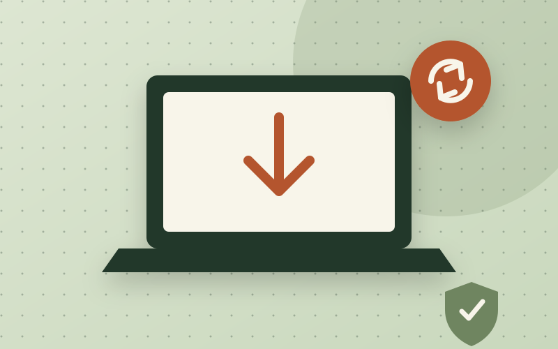
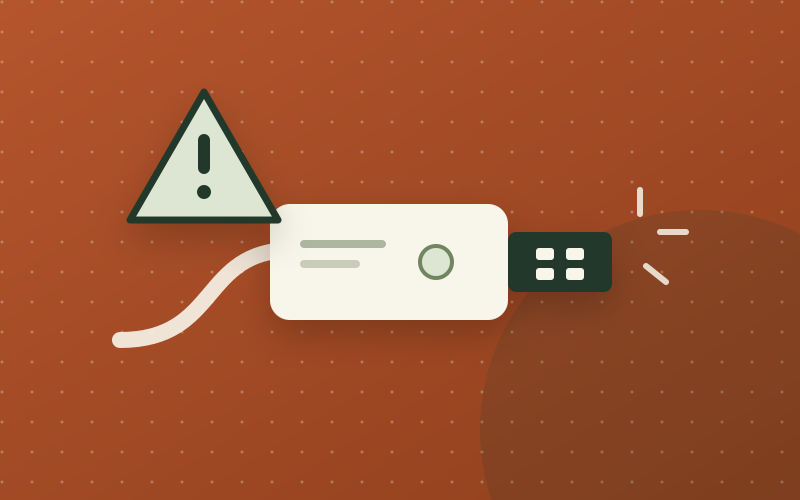

PatchPatch on schedule
Most successful attacks use a flaw that already has a fix. Turn on automatic updates for the operating system, the browser and every app that touches the internet.
Field guide 03 · Devices
The quiet attack
Malware rarely announces itself. It arrives inside a document, a download or a USB stick, and it spends its first minutes learning your device: which folders hold your work, which accounts are saved, and whether the backups are reachable. The goal is not to turn you into a security analyst. It is to make the device harder to infect and easier to recover. Four habits cover most of the gap, and the checklist below is the one to keep when something already feels wrong.
01 · The defences

PatchMost successful attacks use a flaw that already has a fix. Turn on automatic updates for the operating system, the browser and every app that touches the internet.
 Detect
Detect
Endpoint protection looks at what a program does — encrypting files, disabling backups, opening connections — not only at a known virus signature.
 Backup
Backup
Keep one copy offline and one in the cloud. A backup you have never restored is only a hope, so practise a restore before you actually need one.

MediaA found stick can carry malware that runs the moment you plug it in. Disable autorun and scan removable media before you open anything on it.
02 · When it happens
Do this first
Isolation limits the spread. Reporting starts the clock on recovery. The first ten minutes matter more than a perfect explanation.